Puesta en Marcha · Nuevo Hospital del Salvador
Cada rol,
una persona
Organización de Puesta en Marcha y canal oficial con el Servicio de Salud
PresentaQF María Elena Sepúlveda Maldonado
Coordinadora Técnica de Puesta en Marcha · Subdirectora de Apoyo Diagnóstico y Terapéutico
ParaDr. Jorge Zajjur Castro · Director · octubre de 2026
Por qué ordenarnos ahora
Hoy hay muchas manos y pocos canales claros
1
Los correos llegan por arriba y por abajo
Lo oficial con el SSMO se cruza con las coordinaciones del día a día y se pierde quién responde.
2
Se confunde a Puesta en Marcha con las subdirecciones
PM pone los temas en la mesa y coordina; quienes resuelven son los subdirectores y el Director.
3
El traslado está encima
Cada frente necesita una cara visible que responda por su avance, sus plazos y sus pendientes.
«Nosotros solo ponemos la situación en la mesa, pero quienes tienen que resolver son los subdirectores y el Director.»Reunión del equipo de Puesta en Marcha · 27-10-2026
Un solo canal oficial
De director a director, por las coordinaciones técnicas
SSMO
Director del Servicio
Dirección SSMO
Coordinación Técnica SSMO
Francisca Cid
Encomendada como coordinadora técnica del Director del Servicio
Todo lo oficial
entra y sale por aquí
Hospital del Salvador
Director
Dr. Jorge Zajjur Castro
Coordinación Técnica de Puesta en Marcha
QF María Elena Sepúlveda
Encomendada en funciones · Subdirectora SDADT
↔Lo operativo sigue en el uno a uno de cada referente con su par del SSMO (por ejemplo, Felipe Rojas), siempre con copia a la Coordinación Técnica.
Estructura
Puesta en Marcha trabaja en dos ámbitos
Coordinación Técnica · Puesta en Marcha y Gestión del Cambio
QF María Elena Sepúlveda
Ámbito clínico 6 frentes
- Autorización Sanitaria EU Catherine Sepúlveda
- Equipamiento médico Ing. M. Pinto · EU M. Canales
- Plan Piloto Ps. Javiera Pacheco
- Traslado y poblamiento EU F. Araya · C. Poch
- Capacitación Ps. Isabel Rojas
- Cabida Ps. Loreto Pérez
Ámbito administrativo y logístico 3 frentes
- Conducción, con la SDA R. Hermosilla · Ing. F. Lacalle
- Traslado de equipos y comodatos R. Hermosilla · Ing. M. Pinto
- Logística en terreno Rodrigo Espinoza
- Sociedad Concesionaria y servicios Marisol Salvatierra
EU Catherine Sepúlveda queda al 100 % en Autorización Sanitaria.
TIC y Logística salen de Puesta en Marcha y quedan en la Subdirección Administrativa (pedido de Fernando Lacalle).
Rol y persona · ámbito clínico
Quién responde por cada frente clínico
| Rol | Persona | Qué hace | |
|---|
| Coordinación Técnica PM | QF María Elena Sepúlveda | Canal oficial con el SSMO; conduce la reunión diaria | ✓ |
| Autorización Sanitaria | EU Catherine Sepúlveda
con Javiera Flores | SEREMI e ISP; cartera de prestaciones por unidad | ✓ |
| Equipamiento médico (EMMC) | Ing. Matías Pinto · EU Meylin Canales | Existencias, subsanaciones con la Concesionaria, traslado | ✓ |
| Plan Piloto | Ps. Javiera Pacheco
con Dr. Horacio Díaz y EU Meylin Canales | Enrolamiento y capacitación de los 252 nominados | ? |
| Traslado y poblamiento | EU Fernando Araya · Costanza Poch | Programa de traslado y despoblamiento de servicios · Manual de Traslado v1.0 aprobado por Res. Ex. N°3986 (27-10) | ✓ |
| Capacitación | Ps. Isabel Rojas
con C. Guerrero, Javi e Ing. Matías Pinto | Capacitación general y específica | ? |
| Cabida | Ps. Loreto Pérez | Quién trabaja dónde en el nuevo edificio | ✓ |
✓ acordado el 27-10? por confirmar
Rol y persona · ámbito administrativo y apoyos
Quién responde por lo administrativo y lo transversal
| Rol | Persona | Qué hace | |
|---|
| Conducción administrativa y logística | Rodrigo Hermosilla
con Ing. Fernando Lacalle y Marisol Salvatierra | Frentes de soporte, junto a la Subdirección Administrativa | ✓ |
| Traslado de equipos y comodatos | Rodrigo Hermosilla · Ing. Matías Pinto | Solicitudes de traslado y comodatos ante el SSMO y la CSSO | ✓ |
| Logística en terreno | Rodrigo Espinoza | Racks, bodegas y oficinas del nuevo edificio | ✓ |
| Sociedad Concesionaria | Marisol Salvatierra | Servicios concesionados: seguridad, aseo, alimentación, ropería | ? |
| Protección radiológica | TM Allyson Davis (OPR) | Certificación del personal ante la SEREMI | ✓ |
| Señalética | EU Catherine Sepúlveda | Directorios, líneas de piso, tótems y señalética tipo A | ✓ |
| TIC y Logística | Subdirección Administrativa | Salen de Puesta en Marcha · Fernando Lacalle | ✓ |
✓ acordado el 27-10? por confirmar
Quién resuelve
Las subdirecciones deciden; Puesta en Marcha facilita
SDA
Subdirección Administrativa
Ing. Fernando Lacalle
TIC y Logística, fuera de PM
SDM
Subdirección Médica
Dr. Manuel Ramírez
Departamentos clínicos y servicios asistenciales
SDADT
Apoyo Diagnóstico y Terapéutico
QF María Elena Sepúlveda
Primera en los 1 a 1 por servicio
SDGC
Gestión del Cuidado
EU Lorena Encina
Gestión del cuidado de los pacientes
SDGP
Gestión de Personas
Adm. Púb. Andrés Villarroel
Personas y dotación
↳Puesta en Marcha pone cada tema en la mesa con datos y plazo; la decisión es de la subdirección que corresponde y del Director.
Organigrama de trabajo · en vivo
Lo ajustamos aquí mismo
✏️ Editar: arrastra los bloques a donde quieras y el punto azul de una línea hasta su nuevo superior; clic en un bloque para cambiar rol y personas, agregar o quitar. Al tocar ✓ Listo todo se ordena solo.
El organigrama editable está en la plataforma 15 · Organigrama → Puesta en Marcha
Arrastra el fondo para moverte · rueda, pellizco o ＋ / − para acercar · los cambios quedan en este navegador y en la plataforma 15
Dónde estamos · 27-10-2026
Cuatro frentes con cifras para seguir
Equipamiento médico
99,7 %
6.446 de 6.460 equipos constatados. 2.201 no cumplen las tres condiciones: 1.166 se revisan del 28 al 30-10.
Traslado de equipos
~800
solicitados. Solo 18 autorizados (2018) y unos 20 con visto bueno del SSMO. Ningún comodato presentado a la CSSO.
Plan Piloto
152 de 252
enrolados. 224 con capacitación general y 216 con la específica. Cierre el viernes 30-10.
Autorización Sanitaria
1 sem.
para enviar la cartera de prestaciones, dividida por unidad, a la validación de cada jefe.
⚑Lo más crítico es el traslado de equipos: depende de la respuesta del SSMO. El jueves 29-10 nos reunimos con Francisca Cid, Mariana Bravo y Fernando Lacalle solo por equipamiento médico.
Cómo trabajamos
Pocas reuniones, las justas, y cada una con su dueño
Lunes a jueves
08:00
Reunión diaria de Puesta en Marcha: cada responsable informa el estado de su frente.
Miércoles
10:00
Coordinación del traslado en la Dirección (poblamiento y camas).
Viernes
Comité
Comité Estratégico de Gestión Clínica; ese día no hay reunión diaria.
Por servicio
1 a 1
Con cada jefe: plano, cabida, equipos, funcionamiento y Autorización Sanitaria. Partimos por la SDADT.
📌Los compromisos de cada reunión quedan en la Bitácora de Puesta en Marcha, con responsable y plazo, y se ven en el organigrama frente por frente.
Lo que pedimos al Director
Seis definiciones para avanzar
Validar esta organizacióny formalizar la encomendación de funciones de la Coordinación Técnica de Puesta en Marcha.
Instruir que lo oficial con el SSMO vaya por las coordinaciones técnicasFrancisca Cid ↔ María Elena Sepúlveda, de director a director.
Confirmar los roles pendientesUn responsable único del Plan Piloto y los nombres del frente de Capacitación.
Protección radiológica: quién paga la certificación ante la SEREMIAllyson Davis (OPR) envía los costos a Fernando Lacalle.
Medicina Nuclear: no se presenta ahoraFijar una fecha para que el Dr. Colorado exponga lo que requiere abrir el servicio.
Uniformes y OSDOMResolver los casos de uniforme pendientes, y si se incluye OSDOM y dónde.
Puesta en Marcha · Nuevo Hospital del Salvador
Gracias
Puesta en Marcha facilita y coordina. Las decisiones las toman los subdirectores y el Director.
QF María Elena Sepúlveda Maldonado · Coordinadora Técnica de Puesta en Marcha · mariaelenasepulveda@hsalvador.cl